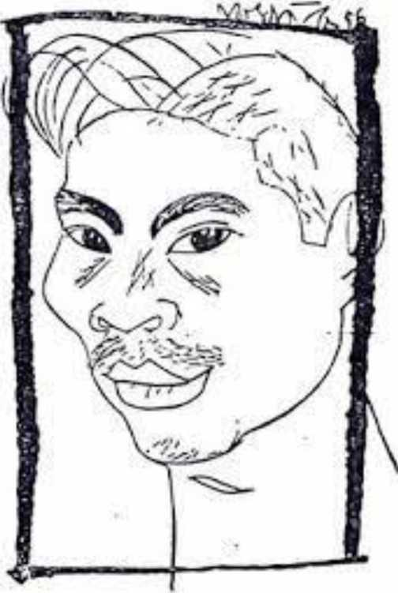

Tôi ở phố Sinh Từ:
Hai người
Một gian nhà chật
Rất yêu nhau sao cuộc sống không vui? Tổ quốc hôm nay
tuy gọi sống hoà bình Nhưng mới chỉ là năm thứ nhất Chúng ta còn muôn việc rối tinh..., Chúng ta
Ngày làm việc, đêm thì lo đẫy giấc Vợ con đau thì rối ruột thuốc men Khi mảng vui - khi chợt nhớ - chợt quên Trăm cái bận hàng ngày nhay nhắt Chúng ta vẫn làm ăn chiu chắt Ta biết đâu Mỹ Miếc tít mù Chúng còn đương bày kế hại đời ta? Tôi đi giữa trời mưa đất Bắc Đất hôm nay tầm tã mưa phùn Bỗng nhói ngang lưng
máu rỏ xuống bùn Lưng tôi có tên nào chém trộm? A! Cái lưỡi dao cùn!
Không đứt được - mà đau!
Chúng định chém tôi làm hai mảnh Ôi! Cả nước! Nếu mà lưng tôi lạnh
Hãy nhìn xem: có phải vết dao?
Không đứt được mà đau!
Lưng Tổ quốc hôm nay rớm máu
Tôi đã sống rã rời cân não
Quãng thời gian nhưng nhức chuyện đi Nam
Những cơn mưa rơi mãi tối sầm
Họ lếch thếch ôm nhau đi từng mảng
Tôi đã trở nên người ôm giận
Tôi đem thân làm ụ cản đường đi
- Dừng lại!
Đi đâu?
Làm gì?
Họ kêu những thiếu tiền thiếu gạo
Thiếu Cha, thiếu Chúa, thiếu vân vân
Có cả anh Nam chị Nữ kêu buồn
- Ở đây
Khát gió, thèm mây...
Ô hay!
Trời của chúng ta gặp ngày mây rủ
Nhưng trời ta sao bỏ nó mà đi?
Sau đám mây kia
là cả miền Nam
Sao nỡ tưởng là non bồng của Mỹ!
Tôi muốn khóc giữ từng em bé
- Bỏ tôi ư? - Từng vạt áo - Gót chân
Tôi muốn kêu lên - những tiếng cọc cằn...
- Không! Hãy ở lại!
Mảnh đất ta hôm nay dù tối
Cũng còn hơn
non bồng Mỹ
triệu lần...
Mảnh đất dễ mà quên
Hỡi bạn đi Nam
Thiếu gì ư? Sao chẳng nói thực thà?
Chỉ là:
- thiếu quả tim, bộ óc!
Những lời nói sắp thành nói cục
Nhưng bỗng dưng tôi chỉ khóc mà thôi Tôi nức nở giữa trời mưa bão Họ vẫn ra đi
- Nhưng sao bước rã rời?
Sao họ khóc?
Họ có gì thất vọng?
Đất níu chân đi,
gió cản áo bay về
Xa đất Bắc tưởng như rời cõi sống Tưởng như đây là phút cuối cùng Giăng giối lại: - mỗi lùm cây - hốc đá
- mỗi căn vườn - gốc vả - cây sung
Không nói được, chỉ còn nức nở Trắng con ngươi nhìn lại đất trời Nhìn cơn nắng lụi, nhìn hạt mưa sa Nhìn con đường cũ, nhìn ngôi sao mờ Ôi đất ấy - quên làm sao được?
Quên sao nơi ấm lạnh ngọt bùi Hôm nay đây mưa gió dập vùi
- Mưa đổ mãi lên người xa đất Bắc... Ai dẫn họ đi?
Ai?
Dan đi đâu? - Mà họ khóc mãi thôi Tròi vẫn quật muôn vàn tảng gió Bắc Nam oi, đứt ruột chia đôi Tôi cúi xuống - quỳ xin mưa bão Chớ đổ thêm lên đầu họ - khổ nhiều rồi!
Họ xấu SỐ - chớ hành thêm họ nữa Vườn ruộng hoang sơ - Cửa nhà vắng chủ Miền Nam muôn dặm, non nước buồn thiu Họ đã đi nhưng trút lại tâm hồn Ôi đất Bắc! Hãy giữ gìn cho họ Tôi ở phố Sinh Từ Những ngày ấy bao nhiêu thương xót Tôi bước đi
không thấy phố không thấy nhà Chỉ thấy mưa sa
trên mầu cờ đỏ
Gặp em trong mưa Em đi tìm việc Mỗi ngày đi lại cúi đầu về - Anh ạ!
họ vẫn bảo chờ...
Tôi không gặng hỏi, nói gì ư?
Trời mưa, trời mưa
Ba tháng rồi
Em đợi
Sống bằng tương lai
Ngày và đêm như lũ trẻ mồ côi
Lũ lượt dắt nhau đi buồn bã
Em đi
trong mưa
cúi đầu
nghiêng vai
Người con gái mới mười chín tuổi Khổ thân em mưa nắng đi về lủi thủi
Bóng chung
đè lên
số phận
từng người
Em cúi đầu đi, mưa rơi
Những ngày ấy bao nhiêu thương xót
Tôi bước đi
không thấy phố
không thấy nhà
Chỉ thấy mưa sa
trên mầu cờ đỏ
Đất nước khó khăn này
sao không thấm được vào Thơ?
Những tủ kính tôi dừng chân dán mũi Các thứ hàng ế ẩm đợi người mua Nhưng mà sách - hình như khá chạy
À quyển kia của bạn này - bạn ấy Quyển của tôi tư lự - nét đăm đăm Nó đang mơ: - nếu thêm cả miền Nam Số độc giả sẽ tăng dăm bảy triệu Tôi đã biến thành người định kiến Tôi ước ao tất cả mọi người ta Đòi thống nhất, phải đòi từ việc nhỏ - từ cái ăn
cái ngủ
chuyện riêng tư
- từ suy nghĩ
nựng con
và tán vợ
Trời mưa mãi lây rây đường phố Về Bắc Nam tôi chưa viết chút nào Tôi vẫn quyết Thơ phải khua bão gió Nhưng hôm nay
tôi bỗng cúi đầu
Thơ nó đi đâu?
Sao những vần thơ
Chúng không chuyển, không xoay trời đất? Sao chúng không chắp được cõi bờ? Non nước sụt sùi mưa Tôi muốn bỏ Thơ
làm việc khác
Nhưng hôm nay tôi mê mải giữa trời mưa Chút tài mọn
tôi làm thơ chính trị
Những ngày ấy bao nhiêu thương xót Tôi bước đi
không thấy phố không thấy nhà
Chỉ thấy mưa sa
trên mầu cờ đỏ
Em ơi! - Ta ở phố Sinh Từ
Em đương có chuyện gì vui hử?
À cái tin trên báo - Ừ em ạ
Chúng đang phải giậm chân đấm ngực!
Vượt qua đầu chúng nó, mọi thứ hàng
Những tấn gạo vượt đi Những tấn thơ, tài liệu Vẫn xéo qua đầu chúng, giới danh gì? Ý muốn dân ta
là lực sĩ khổng lồ
Đè cổ chúng mà xoá nhoà giới tuyến Dân ta muốn, trời kia cũng chuyển Nhưng
Trời mưa to lụt cả gian nhà Ôm tất cả che mưa cản gió Con chó mực nghe mưa là rú Tiếng nó lâu nay nghe khản em ạ Thương nó nhỉ - nó gầy - lông xấu quá Nó thiếu ăn - hay là giết đi ư?
Nó đỡ khổ - cả em đỡ khổ
Em thương nó - ừ, thôi chuyện đó
Nhưng hôm nay anh mói nghĩ ra
Anh đã biến thành người định kiến
Những ngày ấy bao nhiêu thương xót
Tôi bước đi
không thấy phố không thấy nhà
Chỉ thấy mưa sa
trên mầu cờ đỏ
Tôi đi giữa trời mưa đất Bắc
Tai bỗng nghe những tiếng thì thầm
Tiếng người nói xen tiếng người ầm ả
- Chúng phá hiệp thương!
- Liệu có hiệp thương?
- Liệu có tuyển cử?
- Liệu tổng hay chẳng tổng?
- Liệu đúng kỳ? Hay chậm vài năm?
Những câu hỏi đi giữa đòi lỏng chỏng
Ôi! Xưa nay Người 1 vẫn thiếu tin Người
Người vẫn thường kinh hoảng trước tương lai
Người quên mất Mỹ là sư tử giấy
Người vẫn vội - Người chưa kiên nhẫn mấy Gan người ta chưa phải đúng công nông Người chửa có dạ lim tim sắt
Người mở to đôi mắt mà trông!
A tiếng kèn vang
quân đội anh hùng
Biển súng
rừng lê
bạt ngàn con mắt
Quân ta đi tập trận về qua
Bóng cờ bay đỏ phố đỏ nhà
Lá cờ ấy là cờ bách thắng
Đoàn quân kia muôn trận chẳng sờn gan
Bao tháng năm đói rét nhọc nhằn
Từ đất dấy lên
là quân vô sản
Mỗi bước đi lại một trưởng thành
Thắng được Chiến tranh
Giữ được Hoà bình
Giặc cũ chết - lại lo giặc mới
Đoàn quân ấy kẻ thù sợ hãi
Chưa bao giờ làm mất bụng dân yêu
Dân ta ơi! Chiêm nghiệm đã nhiều Ai có LÝ? Và ai có LỰC?
Tôi biết rõ đoàn sung sức ấy
Biết nhân dân
biết Tổ quốc Việt Nam này
Những con người từ ức triệu năm nay
Không biết nhục
Không biết thua
Không biết sợ!
Hôm nay
Cả nước chỉ có một lời hô: THỐNG NHỨT Chúng ta tin khẩu hiệu ta đòi - Trả miền Nam
Tôi ngửa mặt lên trời
Kêu một tiếng - bỗng mầu trời rơi xuống Vài ba tia máu đỏ rớt vào tôi
Dân ta ơi!
Những tiếng ta hô
Có sức đâm trời chẩy máu
Không địch nào cưỡng nổi ý ta
Chúng ta đi - như quả đất khổng lồ
Hiền hậu lắm - Nhưng mà đi quả quyết...
Hôm nay
Những vần thơ tôi viết
Đã giống lưỡi lê: đâm
Giống viên đạn: xé
Giống bão mưa: gào
Giống tình yêu: thắm
Tôi thường tin ở cuộc đấu tranh đây
Cả nước đã bầu tôi toàn phiếu
Tôi là người vô địch của lòng tin
Sao bỗng đêm nay
tôi cúi mặt trước đèn?
Gian nhà vắng - chuột đêm nó rúc Biết bao nhiêu lo lắng hiện hình ra Hừ! Chúng đã biến thành tảng đá chặn đường ta!
Em ơi thế ra
Người tin tưởng nhất như anh
vẫn có phút giây ngờ vực
Ai có LÝ? Và ai có LỰC?
Ai người tin? Ai kẻ ngã lòng tin?
Em ơi
Cuộc đấu tranh đây cả nước cả hoàn cầu
Cả mỗi người đêm ngủ vẫn lo âu Có lẫn máu, có xót thương lao lực Anh gạch xoá trang thơ hằn nét mực Bỗng mắt anh nhìn thấy! Lạ lùng thay! Tảng đá chặn đường này!
Muôn triệu con người
muôn triệu bàn tay
Bật cả máu đẩy đá lăn xuống vực!
Anh đã nghĩ: Không có đường nào khác
Đem ngã lòng ra
mà thống nhất Bắc Nam ư?
Không không!
Đem sức gân ra!
Em ơi em!
Cái này đỏ lắm gọi là TIM
Anh cho cuộc đấu tranh giành THỐNG NHẤT
Hôm nay 2
Trời đã thôi mưa thôi gió
Nắng lên đỏ phố đỏ nhà
Đỏ mọi buồng tim lá phổi
Em oi đếm thử bao nhiêu ngày mưa!
Bây giờ
Em khuân đồ đạc ra phoi
Em nhé đừng quên
Em khuân cả tim gan chúng mình phơi nắng
Em nhìn cao tít trời xanh
Dưói phố bao nhiêu cờ đỏ!
Hôm nay em đã có việc làm
Lương ít - Sống còn khó khăn
Cũng là may...
Chính phủ muôn lo nghìn lắng
Thực có tài đuổi bão xua mưa không thì còn khổ
Em treo cờ đỏ đầu nhà
Lá cờ trừ ma
Xua được bóng đen chúng nó!
Những vết thương kháng chiến đỏ lòm
Đã mím miệng, lên da lên thịt
Tôi bỗng nhói ở nơi lồng ngực
Em ơi!
Chúng đốt phố Ga-li-ê-ni
và nhiều phố khác
Anh đã sống ở Sài Gòn thuở trước Cảnh miền Nam thành một góc tim anh Chúng đốt tận đâu
mà lửa xém tim mình
Tim nó bị thui đen một nửa
Từ dạo ấy
mà em chẳng rõ
- Em hãy đỡ cho anh khỏi ngã
Đứng đây
Một lúc!
Cờ bay
đỏ phố
đỏ nhà
Mầu cờ kia là thang thuốc chữa cho anh Ai thắng ai thua?
Ai có LÝ? Và ai có LỰC?
Em ơi
Hôm nay
trời xanh
xanh đục
Nắng lên
đỏ phố
đỏ cờ
Cuồn cuộn mít tinh
Những ngày thương xót đã lùi xa
Hoà bình
thêm vững
Anh bước đi
đã thấy phố thấy nhà
Không thấy mưa sa
Chỉ thấy nắng lên
Trên mầu cờ đỏ
Ta ở phố Sinh Từ
Em này
Hôm nay
đóng cửa
Cả nhà ra phố mít tinh
Vung cờ đỏ hát hò vỡ phổi
Hỡi những người
thành phố thôn quê
Đói no lành rách
Người đang vui
Người sống đang buồn Tất cả!
Ra đường!
Đi!
hàng đoàn
hàng đoàn
Đòi lấy tương lai:
HÒA BÌNH
THỐNG NHẤT
ĐỘC LẬP
DÂN CHỦ
Đó là tim
là máu đời mình
Là cơm áo! Là ái tình
Nhất định thắng!
1955

Chân dung Trần Dần của Nguyễn Sáng, báo Nhân văn số 1, 15/9/1956
1
Trong bài Phê bình lãnh đạo văn nghệ (1956), Phan Khôi cho biết: "Tôi nhớ có một vị bắt lỗi trong bài thơ Trần Dần có chữ Người viết hoa. Lấy lẽ rằng chữ Người viết hoa lâu nay chỉ để xưng Hồ Chủ tịch, thế mà Trần Dần lại viết hoa chữ Người không phải để xưng Hồ Chủ tịch."
2
Trong Trăm hoa đua nở trên đất Bắc (1959), tác giả Hoàng Văn Chí chú thích đoạn này như sau: "Bài thơ lúc đầu lấy nhan đề là Bài thơ thống nhát và chỉ có đến đây là hết. Hoàng Câm khuyên Trần Dần nên làm thêm một đoạn nữa để 'giữ vững lập trường' mới có thể xuất bản được. Vì vậy nên mới có đoạn sau này và bài thơ cũng đổi nhan đề thành Nhât định thắng." Song trong di cảo, ngay từ bản thảo đầu đưa Nguyễn Đình Thi để đọc góp ý đã có đoạn được coi là 'bổ sung' này, và torng Giai phẩm mùa Xuân 1956 cũng có đoạn ấy.